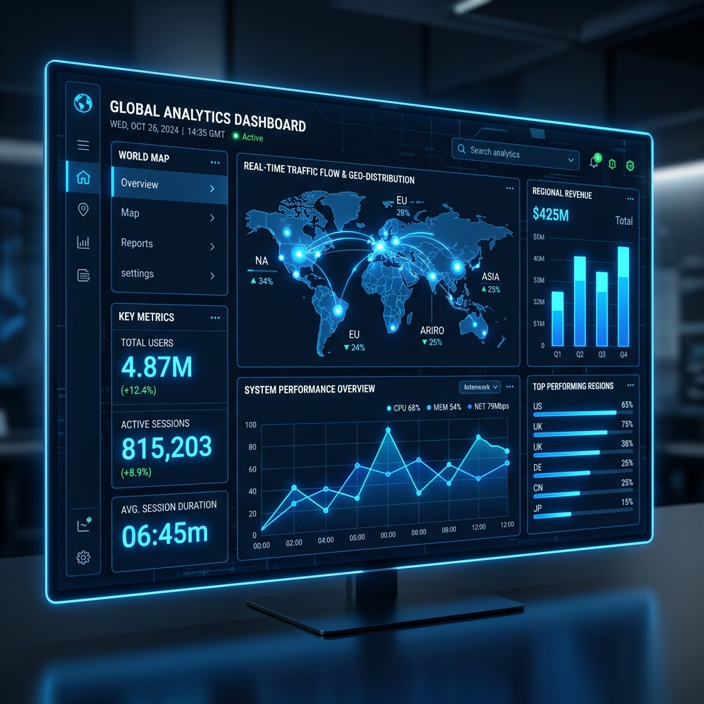
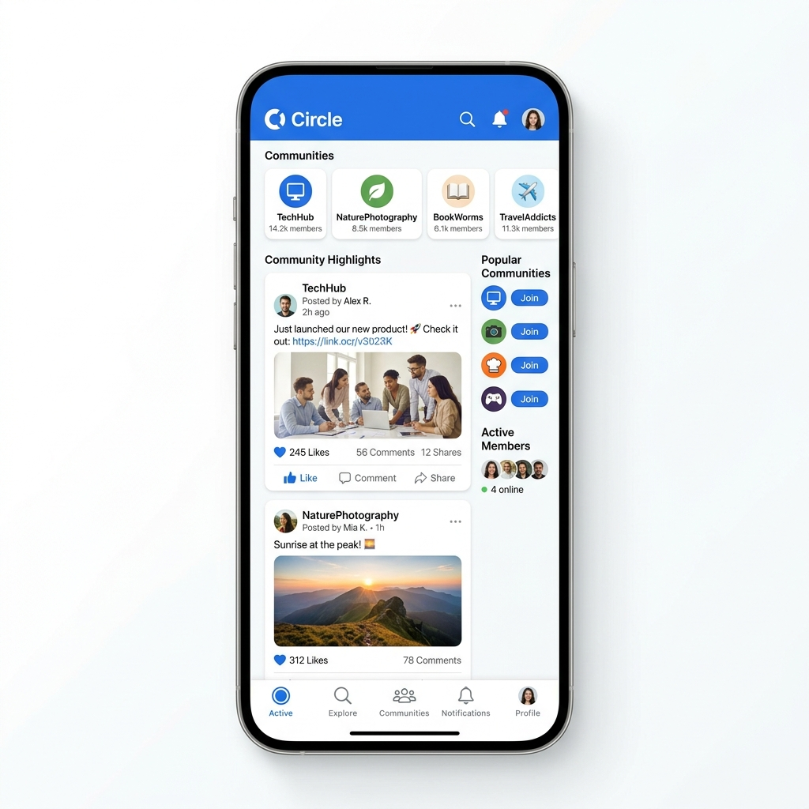

C1 / DATA VISUALIZATIONLumína Analytics
A high-fashion e-commerce experience refined for clarity and conversion. We transformed complex data into a seamless visual narrative.
We don't just build websites; we curate digital experiences that command attention. Explore how we've helped leading brands redefine their global presence through intentional design and technical precision.

C1 / DATA VISUALIZATIONA high-fashion e-commerce experience refined for clarity and conversion. We transformed complex data into a seamless visual narrative.
 C2 / LUXURY BRANDING
C2 / LUXURY BRANDING
Redefining luxury retail with a digital-first approach to customer journeys. Clean aesthetics meet high-performance engineering.

C3 / SOCIAL ARCHITECTURECommunity ecosystem management focusing on high-quality engagement and creative organic growth strategies.
Data-driven aggression for the finance sector. We built a scalable platform that translates data into intentional authority.
Marcus Thorne
CEO, LUMINA ANALYTICS
Our process is as bespoke as the results. From initial concept to deployment, we prioritize architectural clarity.
Build processes focused on sustainable scalability and technical debt elimination.
Digital journeys that communicate your brand values with surgical precision.
Client Retention
Global Awards
Avg ROI Increase
Impressions Served